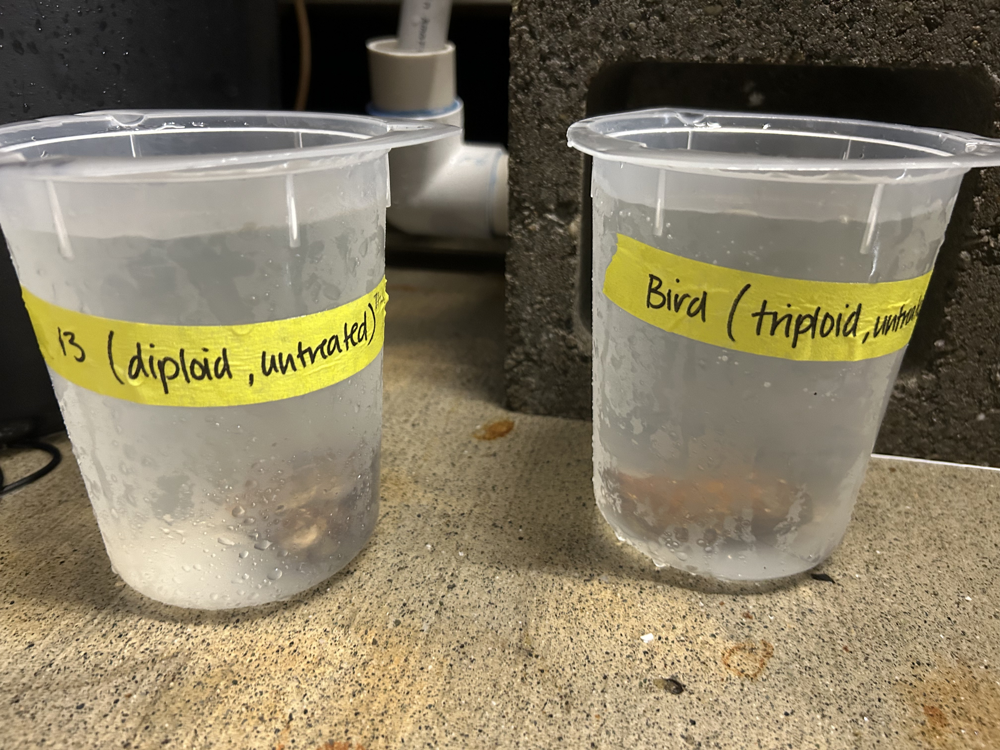
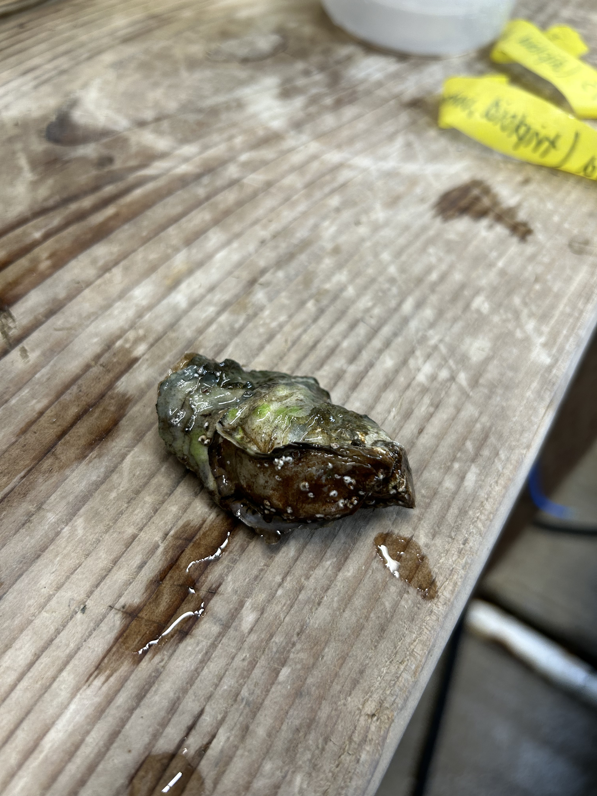
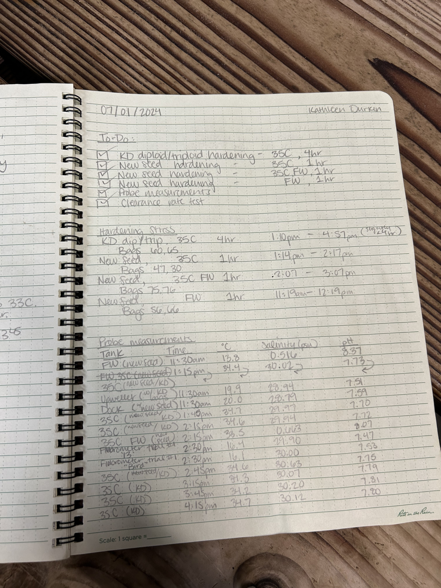
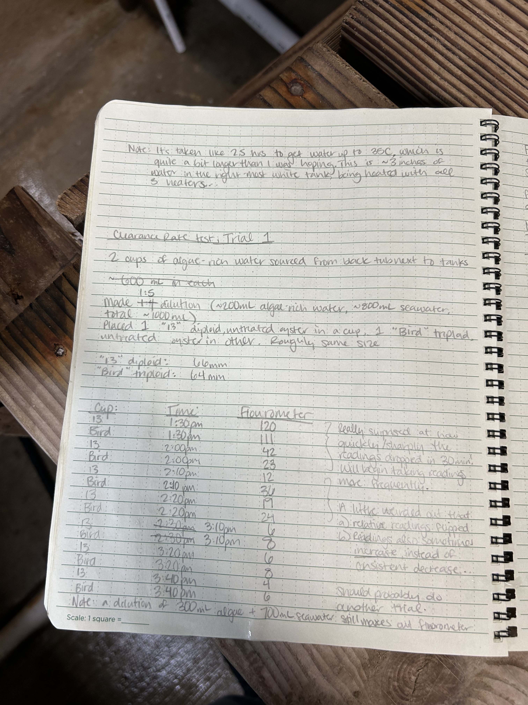
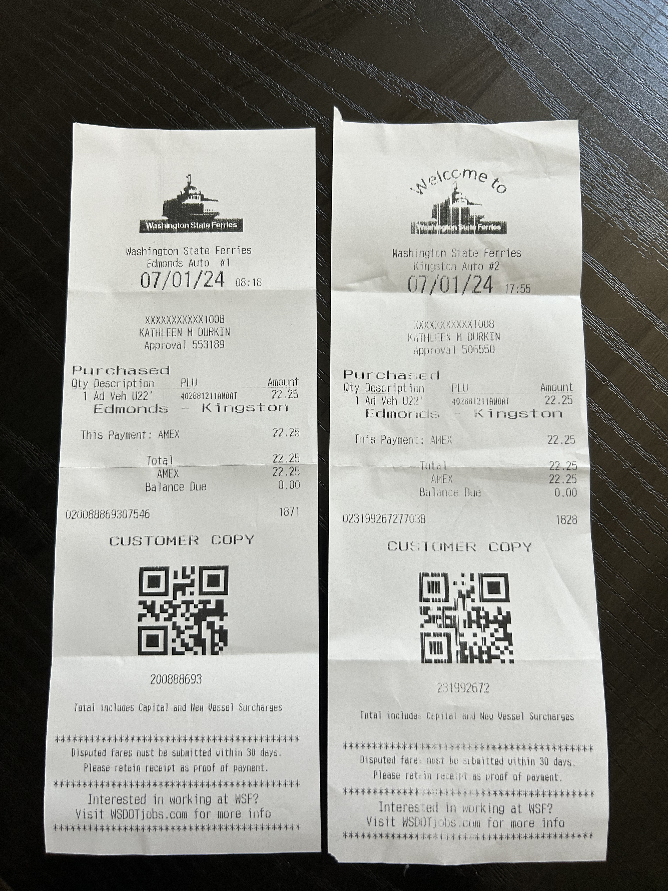
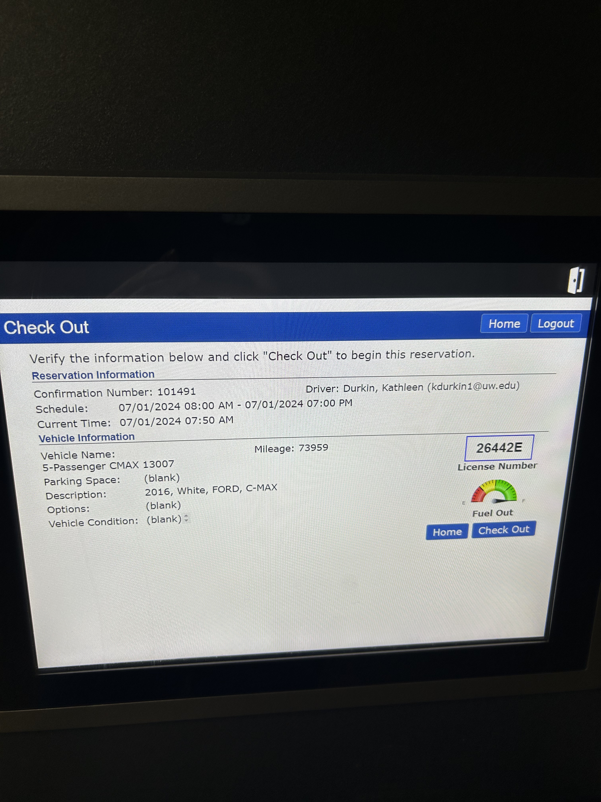
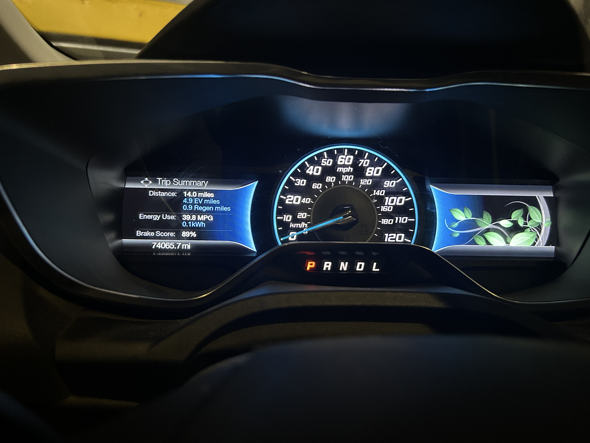

Field day at Point Whitney to continue hardening stress treatments
KD dioploid/triploid stress hardening
New seed hardening (35C, FW, and 35C FW)
Clearance rate trials
Stress hardening
Treatments I did today:
| Experiment | Bags (cattle tag #s) | Treatment | Start time | End time | Duration |
|---|---|---|---|---|---|
| KD diploid/triploid | 60, 65 | 35C seawater | 13:10 | 16:57 | ~4 hr |
| New seed | 56, 66 | freshwater | 11:19 | 12:19 | 1 hr |
| New seed | 30, 47 | 35C seawater | 13:14 | 14:17 | 1 hr |
| New seed | 75, 76 | 35C freshwater | 14:07 | 15:07 | 1 hr |
It took a bit longer than expected to heat the seawater tank to 35C – 2.5hrs, even with three heaters! I had to cut the 4hr treatment a few minutes short to make my ferry and return the Ucar on time. To budget extra heating time I modified my Wednesday and Friday Ucar reservations to check out an hour earlier.
I took probe measurements from the three holer and dock, and from each of the stress treatment containers. See raw data in the “Notebook photos” section, and digitally entered data here.


Clearance rate trials
We’re interested in potentially using clearance rate (the rate at which an oyster removes algae from the water) as a measure of stress. The hatchery has a fluorometer that can be easily used to quantify chlorophyll A (and thus, algal levels) in real time, so I wanted to try using it to measure clearance rate.
Trial 1
One untreated, diploid oyster (“13” cohort, 66 mm); One untreated, triploid oyster (“Bird” cohort, 64 mm)
Placed each in 1000ml dilution of algae-rich seawater (200ml algal water from black tub, 800 mL of seawater)
Measured fluorometry at regular intervals

Quick chart below of Trial 1 fluorometry readings (blue is 13, red is Bird)

The algae levels dropped much more quickly than I expected in both ploidies, from in the hundred to in the tens in the first 30 minutes. Monitoring clearance rate would have to be done at much shorter time intervals. Also noticed that the fluorometer is not perfectly accurate (e.g., reading increased at one point, which I don’t think should be possible).
Trial 2
One untreated, diploid oyster (“13” cohort); One untreated, triploid oyster (“Bird” cohort); Once control cup with no oyster
Placed each oyster in 700ml dilution of algae-rich seawater (100ml algal water from black tub, 600 mL of seawater). Just did serial dilutions until I got a quantifiable fluorometry reading.
Measured fluorometry at regular intervals

Quick chart below of Trial 2 fluorometry readings (blue is 13, red is Bird, yellow is control)
.png)
Takeaways:
Fluorometer readings dropped slightly over the course of an hour in the control – maybe algae just die off at low levels? Not sure if that would affect chlorophyll levels though…
The diploid “13” oyster didn’t seem to consume any algae. I noticed during the trial that oyster looked fully closed during most of the trial, while the “Bird” oyster was clearly opened. If we want to use clearance rate experimentally, we’d need to have a backup plan for oysters that don’t want to feed.

I also noticed after the trial that the “Bird” oyster I was using actually had a second, smaller oyster fused to it (see below), which may have affected the rate of decrease.

Notebook photos
See notes from the day and original probe measurements and clearance rate trial data below




Ucar/ferry receipts



